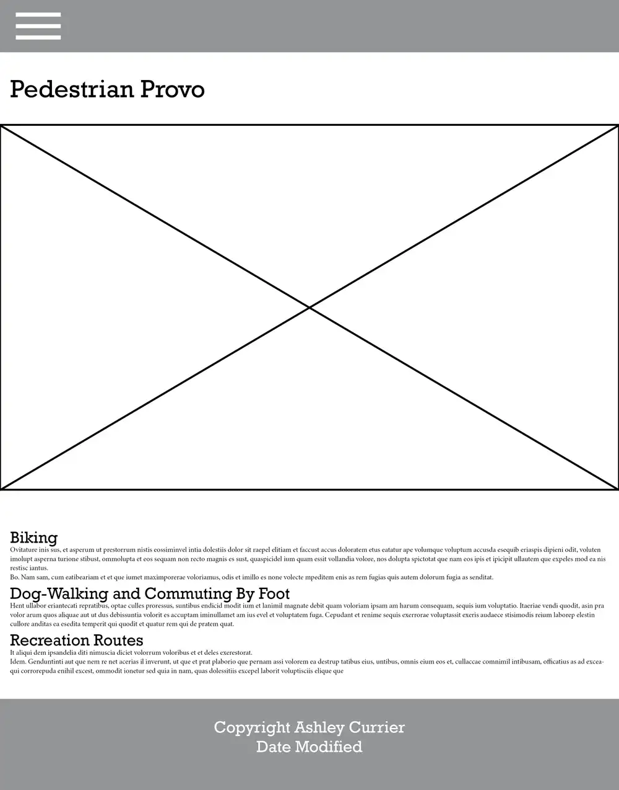
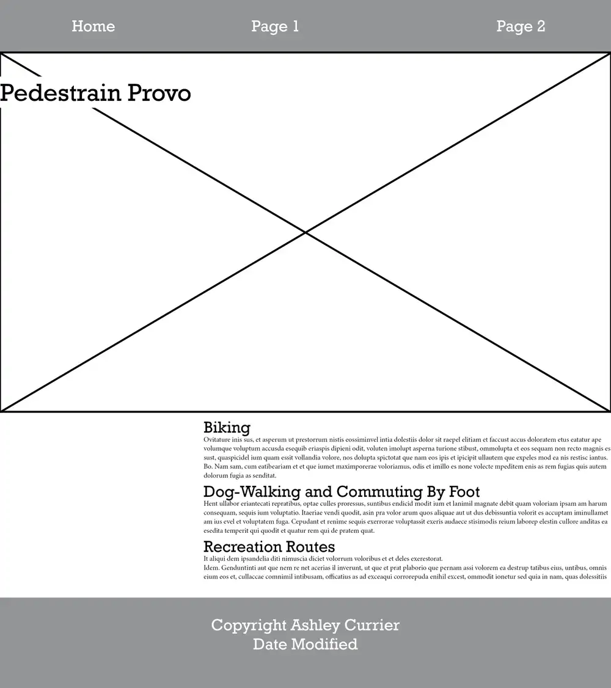

Site Plan
Site Name
Pedestrian Provo
Site Purpose
To disclose information about pedestrian safety and regulations in Provo, Utah
To explore some of the best areas and routes.
Scenarios
1. As a resident of Provo, I want to know the rules and regulations for pedestrians to ensure my safety while walking.
2. As a visitor to Provo, I want to discover the best pedestrian-friendly routes and areas to explore.
3. As a dog owner, I want to understand the guidelines for responsible dog-walking in Provo.
Color Schema
#564138 Mocha. This color will be used for headings and accents.
#D1C6AD Pale Oak. This color will be used for the background.
#2E86AB Ocean Blue. This color will be used for accents.
Typography
Body: "Noto Sans" with the weight of 400.
Headings: "Noto Sans" with the weight of 800.
Mobile Wireframe

Desktop Wireframe
